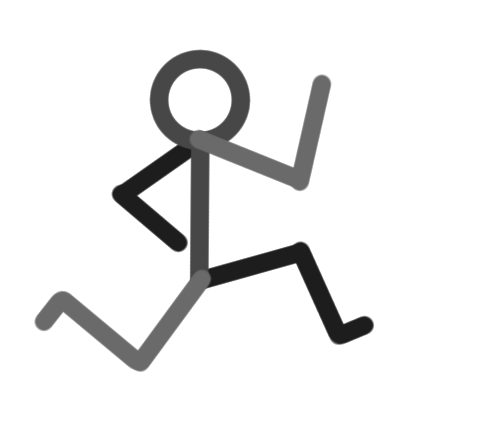

Perception, Abstraction and Culture
Why Computers Work (part 5)
The Treachery of Images by René Magritte is a thought provoking visual brain twist. It shows a pipe, under which is written in French, "this is not a pipe". Magritte is correct, it is not a pipe, but actually a painting:
In a similar vein, you're not currently looking at a painting ~ rather, you're looking at a multitude of pixels, each one acting like a small tile in a huge mosaic containing millions of tesserae, each tile being one of many millions of possible colours. If you were to zoom into the image you'd see something like this:
Yet, you're not even looking at an assortment of tessellated pixels! Rather, your screen actually consists of repeating cells, each in turn split into red, green and blue (RGB) sections. If you used a magnifying glass to look at your screen, you'd see something similar to this:
The upper half of the image contains blocks of the RGB cells arranged to display the basic colours: red, green and blue. The lower half contains RGB cells arranged into two blocks for white and black. By adjusting the amount of constituent red, green and blue emitted in each individual RGB cell, many millions of colours can be generated. If you step back from your screen, squint your eyes and look at the blocks of colour you'll see this effect in action.
For completeness, here's a close-up of one of the individual RGB cells:

There are likely to be several hundred of these minute electrical components per square-inch of the screen you're using to read this article.
Our perception of what we encounter depends on its scale. Furthermore, what we encounter may not be what we see, as René Magritte forces us to acknowledge with The Treachery of Images (we see a pipe when we're actually encountering a painting, or pixels, or a screen, and so on). There is a phenomenological aspect to our relationship to things: we can't help but add meaning coloured by our unique experience of the world. We have a unique and personal perspective.
This applies to other encounters with the world too.
Our perception of time depends on a sense of scale or, perhaps more accurately, tempo. Each of the following eight images shows a different snapshot of a stick man.
Yet if we repeatedly and speedily place them on top of each other, we no longer see eight individual images, but a single image in motion. In fact, because we can't help but add meaning, we see a stick man running.

Scale also effects other senses, such as our perception of sound. Consider the following musical experiment: Beethoven's mighty 9th Symphony stretched to last twenty-four hours. By drastically slowing down the tempo (all other aspects of the piece remaining the same ~ notes, instrumentation, and so on), it becomes something completely different. It sounds like an ambient musical experiment by the likes of Brian Eno and our recognition of melody, form or harmonic structure disintegrates - even though the original melody, form and harmonic structures are still present. Such a temporal zoom, as well as hiding aspects of the music, also reveals new details: I find myself concentrating on the timbre of the instruments and enjoying the indistinct transitions between pitches ~ it's like listening through fog.
Why are these examples important..?
In the first post I challenged you to acquire new perspectives about seemingly everyday things. I called these brain twists because they cause "aha" moments. Such subjective shifts provide a new, and hopefully deeper, understanding of what we're encountering or how we relate to something. The external world remains as it was before, but it is we who have changed perspective.
Yet the previous examples show brain twists are something we do naturally, even if we're not always aware we're performing such twists. These examples were carefully chosen because they bring such changes of perspective into focus.
Put simply, I'm inviting you to shift your perspective about how we change perspective. Or, put another way, can you "brain twist" brain twists..?
Our capacity to shift perspective due to scale is a fundamental reason why computers appear to work. They work so fast at such a small scale that our sense of time and space means we don't see our computer re-drawing a static image on a flat screen made up of millions of RGB cells at a rate of around 64 images per second. Rather, we see this blog post consisting of words, images, sound and video - things that are meaningful to us. The computer is working at a completely different scale of time (3 billion instructions a second), space (running on microscopic electrical components) and with an absence of meaning (it's just physics relating to electrical circuits). Yet you understand the words, appreciate the images and engage with the music in this blog post: you bring your unique culturally informed and meaningful perspective to the human scale of things.
Here's the brain twist: such tricks of perspective due to scale also apply to thinking.
Consider learning to ride a bike ~ it's a challenge because the learner has to think about lots of different things at once. For instance, turning the pedals, steering, keeping balance, posture, the brakes and coordinating all these things together so the beginner cyclist moves safely in the right direction. When we become proficient at cycling, this bundle of thinking simply becomes "riding a bike". All the constituent aspects I describe above are subsumed into a larger concept.
Such diverse dexterous details, through careful practice and familiarity, become a single named activity. In a sense, we have zoomed out in the scale of our thinking. Such generalisations are useful as placeholders in further thoughts... the building blocks of our generalised thinking are at a different scale.
For instance, I could say "I'm just going to cycle to the shops, do you want me to get anything for you?". The concept of cycling to the shops is a place holder for the rather complicated activity of riding a bike, but whose specific details are not important for the meaning of the sentence.
This is, in a computing sense, what we mean by "abstraction".
In this sense of "abstraction", functional units that fulfil a certain role are organised into larger, or are composed of yet smaller, functional units. Such units are used together to achieve some valuable end when their relative scale allows complementary usage.
Because computers process billions of instructions a second, this hierarchy of abstraction is hidden in the blink of an eye with the end result being something comprehensible at our human scale (except when things go wrong and the computer becomes incomprehensible or appears confused... commonly known as a bug).
Often the skill of the programmer or engineer is to work out the arrangement and coordination of such abstractions to achieve something meaningful at the human scale.
A wonderful visual example of such an arrangement and coordination of abstraction is Conway's Game of Life.
The Game of Life is an automata: rules that define a process for how certain states of affairs transition to a new state (sound familiar?). In the case of the Game of Life, the states of affairs describe a huge grid. Each square cell in the grid can be alive (white) or dead (black). Another way to imagine the Game of Life is as many parallel tapes lined up on a huge Turing machine with some squares white (on) and others black (off).
There are only three rules to work out the next state of affairs, and they are disarmingly simple:
- Any live cell with two or three live neighbours survives.
- Any dead cell with three live neighbours becomes a live cell.
- All other live cells die in the next generation. Similarly, all other dead cells stay dead.
It feels as if nothing of much interest could be made with such a game. But consider the following Game of Life grid state:
By following the simple rules, the next state of affairs must look like this (pick a white cell from the first grid, follow the rules in your head, and work out if you agree with this second grid):
Of course, this grid can transition to a further new state of affairs (notice anything interesting? It's an upside-down version of the first grid, but moved one cell to the left and one cell up):
The next state of affairs is, unsurprisingly, the same as the second state but upside down:
A further outcome of such mirroring is that this final state must transition back to the first state of affairs but moved by one cell to the left.
Such an arrangement and coordination of cells, combined with the rules of the Game of Life, create a looping pattern of four steps that always moves in a single direction until it bumps into another pattern of cells. It appears to humans as if something is flying across the grid of squares (which is why this pattern is called a spaceship).
Skilful combination and arrangement of such small groups of cells in the Game of Life show how abstraction, scale and perspective interact. In the following video, as the camera zooms out the tempo of change speeds up to reveal structures within structures, and something rather amazing.
A similar stack of abstraction is required for you to read this blog post on your computer.
My website is created using an easy-to-read-and-write programming language called Python. Python is, itself, written in another programming language called C. C is less easy to read but still comprehensible to a trained software engineer. Yet C has to be compiled for it to work. When C code is compiled, the relatively understandable C code is translated into instructions written in assembly language, that work in a way that is closer to how the circuitry of the computer works. But we're not finished yet..! The assembly language is itself translated into machine code, a representation of assembly language instructions as binary numbers. This is the lowest level software engineers tend to go when it comes to zooming-in to the computer. But the numeric machine code instructions physically stored on the computer hardware are usually further refined into microcode - a series of circuit-level instructions that describe how the hardware should behave to complete the computation. Of course, someone will have organised and designed the millions of transistors and other microscopic components that make up the (Turing complete) hardware. This is the level of computing at which electrical engineers, chip designers and, ultimately, physicists can be found.
Along the way, I didn't have to write everything from scratch. Coders use software libraries in the same way a chef may re-use pre-existing recipes. Someone else will have figured out how to do some valuable task and organised the steps needed to fulfil it into, say, a module of re-usable Python code. Just like the bundle of thinking needed to ride a bike becomes subsumed into the concept of cycling, I don't have to know the implementation details, but can refer to the relevant re-usable code when it is needed in my own program. Such re-use of existing instructions happens in all the levels of the computing stack I describe above.
All these levels of abstraction are required to get to this fragment of Python:
As I come to the end of this exploration of computing, I can't help but feel there is one final brain twist ~ something missing or yet undiscovered about our relationship with computers.
To use a musical metaphor, I feel like I've explained why a piano works (the tuning, acoustic properties, action of the keyboard and hammers) and shown why this relates to musical theory. Yet I've said nothing about the art or performance of music, the emotions we feel when we hear or play music, or that music moves us at a fundamental and human level.
We are missing the "music" of computers (and we miss it at our peril).
Wittgenstein best sums up my feeling:
Die Menschen, die immerfort ›warum‹ fragen, sind wie die Touristen, die, im Bädeker lesend, vor einem Gebäude stehen & durch das Lesen der Entstehungsgeschichte etc etc daran gehindert werden, das Gebäude zu sehen.
(People who are constantly asking 'why' are like tourists, who stand in front of a building, reading Baedeker, & through reading about the history of the building's construction etc etc are prevented from seeing it.)
~ Ludwig Wittgenstein, Culture and Value (MS 124:93)
We should, rightly, be amazed by the technical marvel of computers; but it is all too easy to be overwhelmed by, and focus on, the apparent cleverness (or Rube Goldberg-iness) of it all. Sadly, in so doing we miss the opportunity for an enlarged, more creative and expressive encounter with computing.
Computers are not just machines for rapidly evaluating logical instructions. They are a medium through which we share and express our values, culture, social world and forms of life. They are only valuable because we are able to create and express things of significance through computers. Furthermore, the way we express things with computers, and that we choose this form of expression is also of cultural significance. Like other forms of creative endeavour, computers reflect those who make, inhabit and consume in such a medium.
Computers shine when they enlarge us in an affirmative, fulfilling, humane, creative and expressive way. Yet computing for the sake of computers, with no regard for culture, is a diminished, inhumane and insular form of ignorance and, sadly, I can't help but feel disappointed with how, in the mainstream, we currently use and think of computers.
Social media is anything but social... it's an efficient advertising laboratory that turns humanity into lab rats caged in echo chambers of digitally digested packets of small-mindedness. "Artificial intelligence", "machine learning", "blockchain" and other such buzzwords are nerdy PR for the clever use of computers to unsatisfactorily automate human activity (including our latent prejudices). Computer games are mostly beautiful looking yet formulaic variations on a theme, target driven and hardly allow a player to express themselves. Our world is polluted by complicated and unpleasant computerised gizmos: "intelligent" washing machines, programmable coffee makers, automatic point-of-sale machines... most of which are banal or frustrating to use. And, of course, no aspect of life is too small to be "solved" by an app available on your mobile device (a perculiarly problematic outlook ~ it's as if we're all broken and need technology to fix us).
Such a shallow, invasive and unfulfilling world of computing is perhaps inevitable. It reflects our failure to think creatively while we focus on automating things in the most trivial, complicated or inconvenient manner. Yet highlighting such a problematic state of affairs is helpful, for then we can compensate and re-balance.
Personally, I can't help but feel the missing part of our relationship with computers is an emphasis on things like culture, contemplation and creativity ~ activities and aspects of our lives that are affirmative, healing, empowering, raise up our existence or provoke useful reflection and personal growth.
The final brain twist I have for you is to rise above a merely technical view of computers. I hope you imagine, create and participate in a meaningful, authentic and engaging culture expressed with and through computers. One in which computers become a medium for affirmative, liberating and expressive activities that enlarge ourselves, our world and our place in it.
In other words, let's together compose the oft-missing "music" of computing.
After all, we are only just getting started with these strange instruments of automation.
Thank you for reading.
Peace.